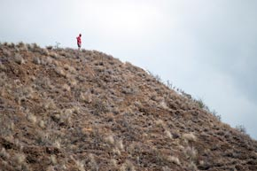
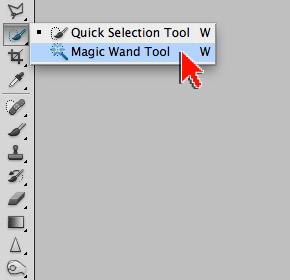
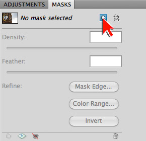
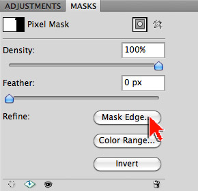
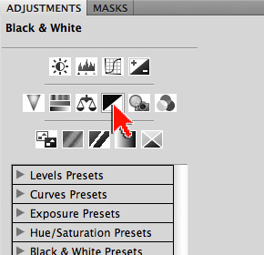
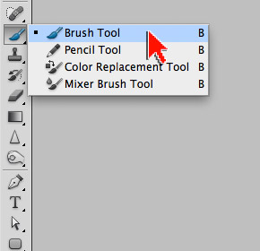

Mahalo! Workshop Follow-up
Thank you all for attending! It was a real pleasure to have each and every one of you there. Please note that two Photoshop preferences were set on the workshop computers that may influence your ability to replicate the exercises on your own:
- Preferences > Interface > Uncheck Open Documents as Tabs
- Preferences > Cursors > Full Size Brush Tip
In case you are curious:
Don't forget to do your homework:
- Study the Refine Edge and Mask Edge commands
- Study the Color Range command
- Study Quick Selection Tool use
- Study Smart Objects and Smart Filter use
1. Open the image to be masked ...
- Open diamond-head.jpg in Adobe Photoshop (image right)
- Tap the letter 'f' so you're working on a solid grey background
- Note: Tapping 'f' a second time gives you a black background
- Note: Tapping 'f' a third time takes you back to normal viewing mode
- From the Menu bar, go to File > Save As...
- Save your file as a .psd (download ZIPPED .psd of this step)
- a .psd (Photoshop Document) will preserve ALL your layers and settings

2. Select the sky ...
- In the Tool bar, select the Magic Wand Tool (image right)
- In the Options bar, reset the Magic Wand Tool
- To reset a tool, right-click on the tool icon in Options bar (left end) and choose Reset Tool
- With the Magic Wand Tool, click the sky to create an initial selection
- To select the remaining portions of the sky, hold down the SHIFT key
and click the un-selected areas- Note: When you hold the SHIFT key down, a little + is added to the Magic Wand cursor
- Note: If you need to start a new selection, from the Menu bar go to Select > Deselect
- When your final selection is in place, select the Move Tool from the Tool bar to avoid accidental selection or de-selection issues
- Reality check: This is a VERY easy selection exercise because 1.) Diamond Head is a relatively hard edged object and 2.) there is a clear difference in contrast between Diamond Head and the sky

3. Mask and invert ...
- Open the MASKS panel
- Click the [Add a pixel mask] button (image right)
- Note: You have created a mask based on a selection
- Note: The mask created is doing the exact opposite of what we want (Diamond Head is hidden - the sky is visible)
- In the MASKS panel, click the [Invert] button
- Note: The mask is now doing exactly what we want (Diamond Head is visible - the sky hidden)
- Note: Transparency in Photoshop is represented as a checkerboard pattern
- Save your file as a .psd (download ZIPPED .psd of this step)
- Tap the letter 'f' until you return to normal screen mode

4. Open a second image ...
- Open chopper.jpg in Adobe Photoshop (image right)
5. Move and re-stack ...
- With the Move Tool, drag the chopper.jpg on top of the diamond-head.jpg
- Note: Adding SHIFT after you begin dragging, and letting SHIFT go after you drop, aligns the chopper.jpg to the center of diamond-head.jpg
- If necessary, use the Move Tool to align the two layers
- In the Layers Panel, drag the chopper layer below the Diamond Head layer (image right)
- Save your file (download ZIPPED .psd of this step)
- Close the chopper.jpg image (do not save)
- Tap the letter 'f' so you're working on a solid grey background
6. Refine the mask edge ...
- In the Layers Panel, select the mask attached to the Diamond Head layer
- Note: There are 3 selectable thumbnails in the Layers panel
- Note: When masking it is critical to be aware of which thumbnail is selected. Many masking errors and issues result from a user being unaware of which thumbnail is highlighted in the Layers panel
- Open the MASKS panel
- Click the [Mask Edge] button (image right)
- Note: Clicking the [Mask Edge] button opens the Refine Mask dialogue box where you can fine-tune your mask
- Note: The Refine Mask dialogue box is very useful and powerful. You should definitely learn more about this feature (study at home)
- In the Refine Mask dialogue box, set the following:
- View Mode: On Layers (so we can see changes happen to the image)
- Output: Layer Mask (so changes are applied to our mask)
- Select the Zoom Tool in the Refine Mask dialogue box
- Zoom in to the plants silhouetted against the sky along the edge of Diamond Head
- Note: There is a less than ideal mask around the silhouetted plants - we will improve this
- In the Edge Detection section:
- For Radius, experiment by increasing the value (slider right) - you should be watching your silhouetted plants as you do this
- Note: By raising this value you are asking Photoshop to go out in search of a better edge
- Experiment with other sliders including Contrast and Shift Edge until you believe that you've improved your mask edge
- Save your file (download ZIPPED .psd of this step)

7. Adjust the composite ...
- In the Layers Panel, select the Diamond Head layer thumbnail
- Open the ADJUSTMENTS panel
- Click on the Create a new Black & White adjustment layer icon (image right)
- Note the effect: The adjustment layer was added above the Diamond Head layer
- Note: Added layers always come in above the layer currently selected
- Note: Photoshop gives you a FREE mask when you add a fill or adjustment layer
- In the ADJUSTMENTS panel, experiment with the black & white adjustments available until you get the look you want
- Save your file (download ZIPPED .psd of this step)

8. Mask the adjustment ...
- Select the Brush Tool from the Tool bar (image right)
- In the Options bar, reset the Brush Tool
- To reset a tool, right-click on the tool icon in Options bar (left end) and choose Reset Tool
- With the Brush tool, right-click on your image and set the following:
- Size: 6px
- Hardness: 100%
- At the bottom of the toolbar, click the Default Foreground and Background Color icon (the smaller pair of square color chips)
- Click the double arrow switcher icon so that black is the foreground color (the top square of the larger pair of square color chips)
- Zoom in to the man standing on the top of Diamond Head
- In the Layers Panel, select the mask attached to the Black & White adjustment layer
- Note: There are 5 selectable thumbnails in the Layers panel
- Note: When masking it is critical to be aware of which thumbnail is selected. Many masking errors and issues result from a user being unaware of which thumbnail is highlighted in the Layers panel
- Painting with black, paint over the man to hide (conceal) the effect of the Black & White adjustment layer
- Save your file (download ZIPPED .psd of this step)
- Tap the letter 'f' until you return to normal screen mode
